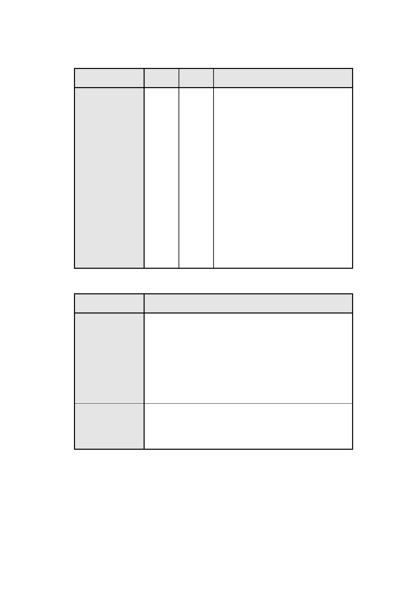

(二)土地使用分區管制：
1.建蔽率及容積率
使用分區
特定商業區(五)
特定商業區(六)
建蔽率
55%
容積率
353%
備註
1.建蔽率以 55%為原則，得經臺北市
都市設計及土地使用開發許可審議
委員會審議同意後予以放寬，但最
高不得超過 65%。
2.依「修訂台北市主要計畫商業區
(通盤檢討)計畫案」規定，由第三
種工業區變更為第三種商業區，應
捐贈土地 30%，故按第三種工業區
70%土地計算原有容積；另依「都
市計畫工業區檢討變更審議規範」
規定，提供或捐贈公共設施用地、
可建築土地、樓地板面積或一定金
額之合計占變更總面積不得低於
40.5% 推 算 特 定 商 業 區 ( 五 ) 之 基 準
容積率為
353%
(300%x70%/59.5%)。
2.允許使用項目
使用分區
特定商業區(五)
特定商業區(六)
允許使用項目
1.土地及建築物除不得供作第二十四組特種零售業甲
組、第二十五組特種零售業乙組、第三十六組殮葬服
務業外，其餘比照臺北市土地使用分區管制自治條例
第三種商業區使用項目規定辦理。
2.供住宅使用之樓地板面積(含其附屬相關設施)不得超
過容積總樓地板面積之 30%。
3.建築物沿南港路之 1、2 樓街面空間，應配置商業、辦
公等相關使用空間且不得作為住宅及法定停車空間。
土地及建築物除不得供作第二十四組特種零售業甲
組、第二十五組特種零售業乙組、第三十六組殮葬服務
業外，其餘比照臺北市土地使用分區管制自治條例第三
種商業區使用項目規定辦理。
3.本計畫區不適用本市土地使用分區管制自治條例有關綜合設計
放寬規定。
-3-